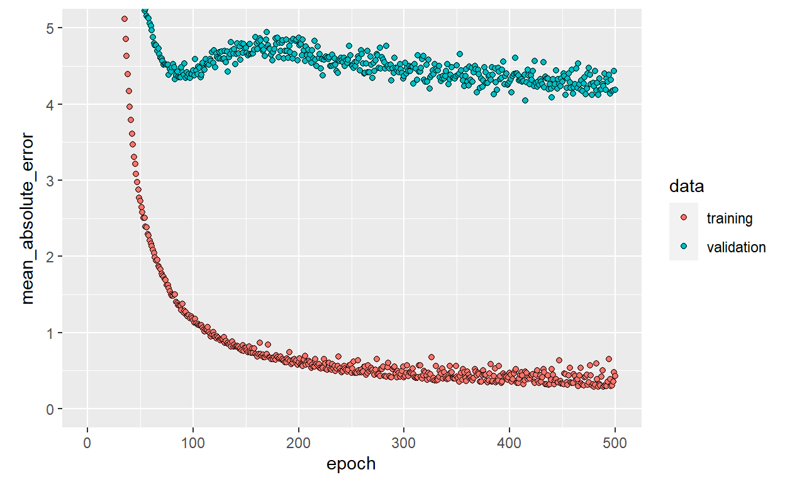
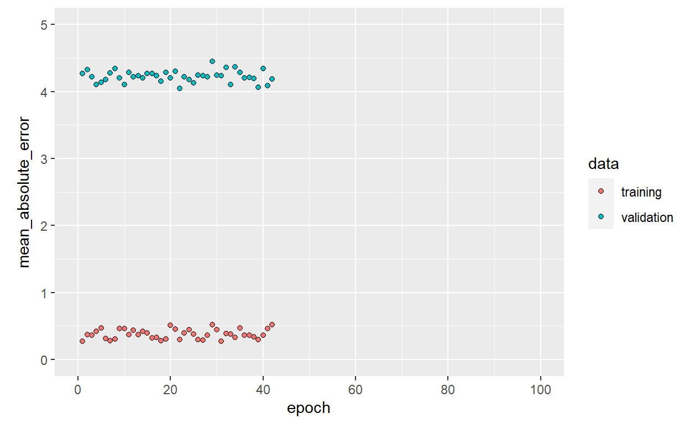

A short description of the post.
References RKerasRegrUseCase
This gallery post is used to showcase different aspects of mlr3keras. As mlr3keras is still under heavy development, this place might be a good way to look for currently working aspects of the package.
In a regression problem, we aim to predict the output of a continuous value, like a price or a probability. Contrast this with a classification problem, where we aim to predict a discrete label (for example, where a picture contains an apple or an orange).
This notebook builds a model to predict the median price of homes in a Boston suburb during the mid-1970s. To do this, we’ll provide the model with some data points about the suburb, such as the crime rate and the local property tax rate.
library(mlr3)
library(mlr3keras)
library(mlr3pipelines)
library(keras)
# tensorflow::use_session_with_seed(42, disable_gpu = FALSE, disable_parallel_cpu = FALSE)The Boston Housing Prices dataset is accessible directly from mlr3tasks.
boston_task = tsk("boston_housing")This dataset is much smaller than the others we’ve worked with so far: it has 506 total examples that are split between 404 training examples and 102 test examples:
paste0("observations: ", boston_task$nrow, ", features: ", boston_task$ncol)
[1] "observations: 506, features: 19"The dataset contains 13 different numeric features:
Each one of these input data features is stored using a different scale. Some features are represented by a proportion between 0 and 1, other features are ranges between 1 and 12, some are ranges between 0 and 100, and so on.
boston_task$head(n = 3) # Display sample features, notice the different scales
medv age b chas cmedv crim dis indus lat lon lstat nox
1: 24.0 65.2 396.90 0 24.0 0.00632 4.0900 2.31 42.2550 -70.955 4.98 0.538
2: 21.6 78.9 396.90 0 21.6 0.02731 4.9671 7.07 42.2875 -70.950 9.14 0.469
3: 34.7 61.1 392.83 0 34.7 0.02729 4.9671 7.07 42.2830 -70.936 4.03 0.469
ptratio rad rm tax town tract zn
1: 15.3 1 6.575 296 Nahant 2011 18
2: 17.8 2 6.421 242 Swampscott 2021 0
3: 17.8 2 7.185 242 Swampscott 2022 0Let’s select numeric features and add column names for better data inspection.
boston_task$select(subset(boston_task$feature_types, type == "numeric")$id)
boston_task$head(n = 3)
medv age b cmedv crim dis indus lat lon lstat nox
1: 24.0 65.2 396.90 24.0 0.00632 4.0900 2.31 42.2550 -70.955 4.98 0.538
2: 21.6 78.9 396.90 21.6 0.02731 4.9671 7.07 42.2875 -70.950 9.14 0.469
3: 34.7 61.1 392.83 34.7 0.02729 4.9671 7.07 42.2830 -70.936 4.03 0.469
ptratio rm zn
1: 15.3 6.575 18
2: 17.8 6.421 0
3: 17.8 7.185 0medv displays the house prices in thousands of dollars. (You may notice the mid-1970s prices.)It’s recommended to normalize features that use different scales and ranges. Although the model might converge without feature normalization, it makes training more difficult, and it makes the resulting model more dependant on the choice of units used in the input.
# Test Data not used while scaling
# TODO: Is it?
# TODO: Talk about the conviniece of setting the pipeline
library(mlr3pipelines)
po_scale = PipeOpScale$new()Let’s build our model. Here, we’ll use a sequential model with two densely connected hidden layers, and an output layer that returns a single, continuous value. The model building steps are wrapped in a function, build_model, since we’ll create a second model, later on.
# TODO: say a few things about keras here
library(keras)
build_model = function() {
model = keras_model_sequential() %>%
layer_dense(units = 64, activation = "relu",
input_shape = boston_task$ncol - 1) %>%
layer_dense(units = 64, activation = "relu") %>%
layer_dense(units = 1)
model %>% compile(
loss = "mse",
optimizer = optimizer_rmsprop(),
metrics = list("mean_absolute_error")
)
model
}
model = build_model()
model %>% summary()
Model: "sequential"
________________________________________________________________________________
Layer (type) Output Shape Param #
================================================================================
dense (Dense) (None, 64) 896
________________________________________________________________________________
dense_1 (Dense) (None, 64) 4160
________________________________________________________________________________
dense_2 (Dense) (None, 1) 65
================================================================================
Total params: 5,121
Trainable params: 5,121
Non-trainable params: 0
________________________________________________________________________________The model is trained for 500 epochs, recording training and validation accuracy in a keras_training_history object. We also show how to use a custom callback, replacing the default training output by a single dot per epoch.
# Display training progress by printing a single dot for each completed epoch.
print_dot_callback <- callback_lambda(
on_epoch_end = function(epoch, logs) {
if (epoch %% 80 == 0) cat("\n")
cat(".")
}
)
# learner = lrn("regr.keras")
learner = po("learner", lrn("regr.keras"))
# Set Hyperparams, note that model belongs to hyperparams here, what makes it
# tunable in mlr3...
learner$param_set$values$epochs = 500L
learner$param_set$values$model = model
learner$param_set$values$callbacks = list(print_dot_callback)
learner$param_set$values$validation_split = 0.2
learner$param_set$values$verbose = 0L
# TODO deletes the other values...
# learner$param_set$values = list(
# epochs = 500,
# model = model,
# validation_split = 0.2,
# verbose = 0,
# callbacks = list(print_dot_callback)
# )
lrn_pipe = GraphLearner$new(po_scale %>>% learner)
# TODO: No need to sample here because observations are iid...?
# If you take less training examples, curve drops more visibly
# But at this size of data, learner needs almost no more then 50 epochs to fit
# the model
lrn_pipe$train(boston_task, row_ids = 1:404)
................................................................................
................................................................................
................................................................................
................................................................................
................................................................................
................................................................................
....................Now, we visualize the model’s training progress using the metrics stored in the history variable. We want to use this data to determine how long to train before the model stops making progress.
library(ggplot2)
history = lrn_pipe$model$regr.keras$model$history
plot(history, metrics = "mean_absolute_error", smooth = FALSE) +
coord_cartesian(ylim = c(0, 5))
This graph shows little improvement in the model after about 200 epochs. Let’s update the fit method to automatically stop training when the validation score doesn’t improve. We’ll use a callback that tests a training condition for every epoch. If a set amount of epochs elapses without showing improvement, it automatically stops the training.
# The patience parameter is the amount of epochs to check for improvement.
# TODO: insstead of set up a whole new model we just need to adapt the callback here
early_stop <- callback_early_stopping(monitor = "val_loss", patience = 20)
learner$param_set$values$callbacks = list(early_stop, print_dot_callback)
lrn_pipe$train(boston_task, row_ids = 1:404)
..........................................
history = lrn_pipe$model$regr.keras$model$history
plot(history, metrics = "mean_absolute_error", smooth = FALSE) +
coord_cartesian(xlim = c(0, 100), ylim = c(0, 5))
The graph shows the average error is about $2,500 dollars. Is this good? Well, $2,500 is not an insignificant amount when some of the labels are only $15,000.
predict_boston = lrn_pipe$predict(boston_task, row_ids = 405:506)
head(predict_boston$data$tab, n = 3L)
row_id truth response
1: 405 8.5 4.660712
2: 406 5.0 5.156251
3: 407 11.9 7.180611
predict_boston$score(list(msr("regr.mse"), msr("regr.mae")))
regr.mse regr.mae
42.233390 5.577031 During development of a model, sometimes it is useful to be able to obtain reproducible results from run to run in order to determine if a change in performance is due to an actual model or data modification, or merely a result of a new random sample.
The use_session_with_seed() function establishes a common random seed for R, Python, NumPy, and TensorFlow. It furthermore disables hash randomization, GPU computations, and CPU parallelization, which can be additional sources of non-reproducibility.
To use the function, call it immediately after you load the keras package:
library(keras)
use_session_with_seed(42)
# ...rest of code follows...This function takes all measures known to promote reproducible results from Keras sessions, however it’s possible that various individual features or libraries used by the backend escape its effects. If you encounter non-reproducible results please investigate the possible sources of the problem. The source code for use_session_with_seed() is here: https://github.com/rstudio/tensorflow/blob/master/R/seed.R. Contributions via pull request are very welcome!
Please note again that use_session_with_seed() disables GPU computations and CPU parallelization by default (as both can lead to non-deterministic computations) so should generally not be used when model training time is paramount. You can re-enable GPU computations and/or CPU parallelism using the disable_gpu and disable_parallel_cpu arguments. For example:
library(keras)
use_session_with_seed(42, disable_gpu = FALSE, disable_parallel_cpu = FALSE)This notebook introduced a few techniques to handle a regression problem.
Mean Squared Error (MSE) is a common loss function used for regression problems (different than classification problems). Similarly, evaluation metrics used for regression differ from classification. A common regression metric is Mean Absolute Error (MAE). When input data features have values with different ranges, each feature should be scaled independently. If there is not much training data, prefer a small network with few hidden layers to avoid overfitting. Early stopping is a useful technique to prevent overfitting